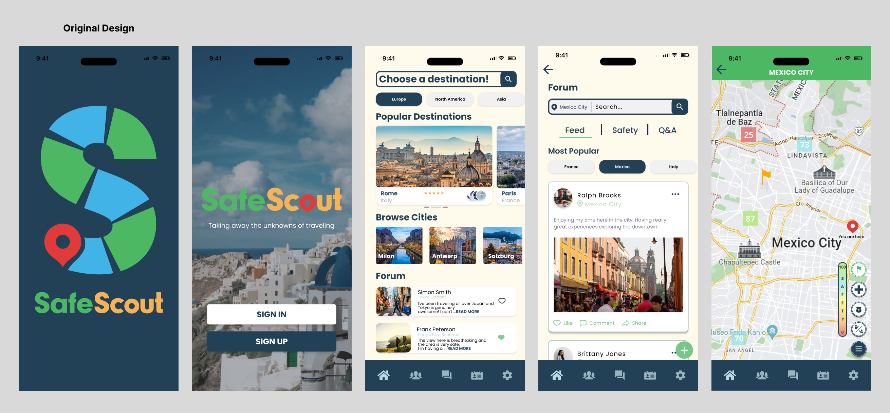
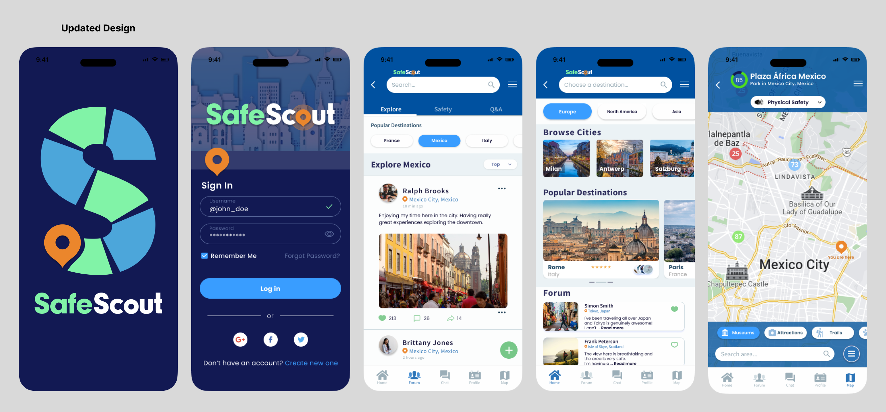
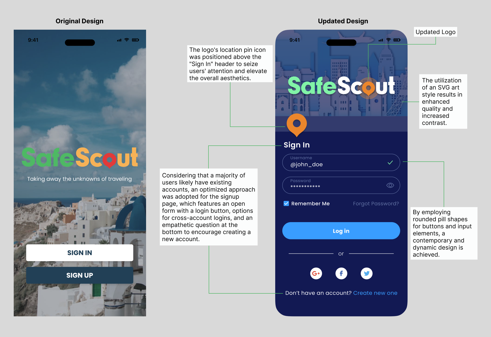
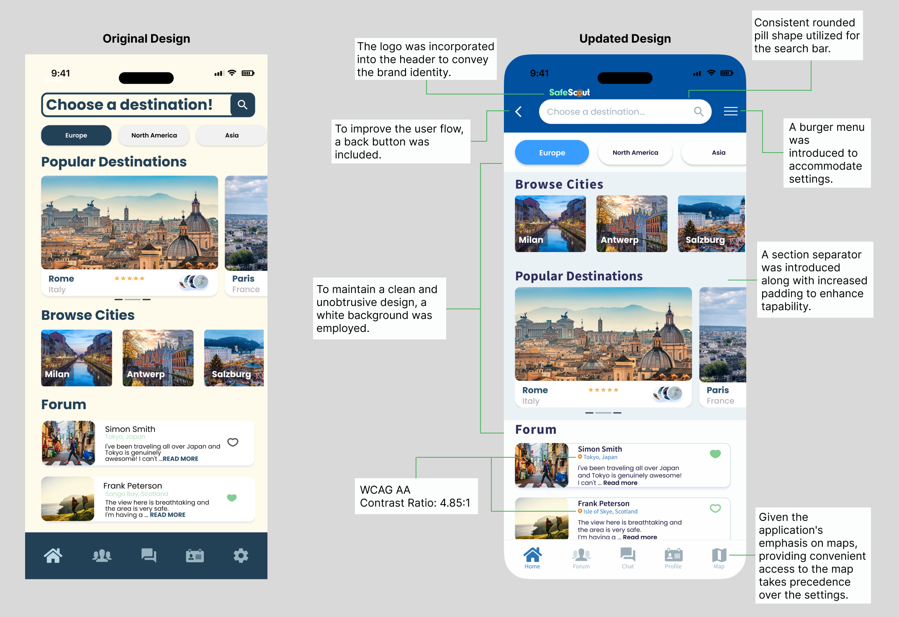
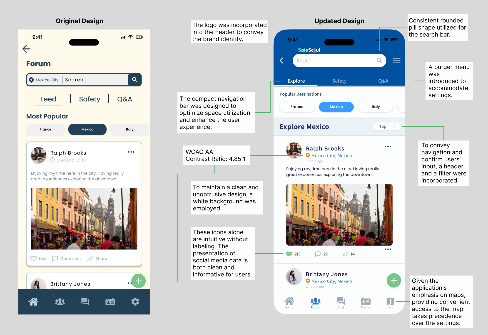
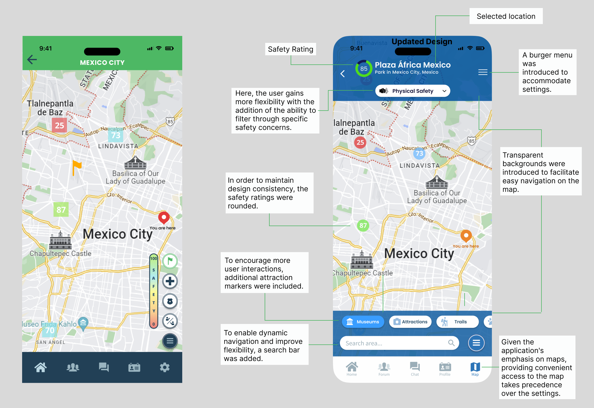
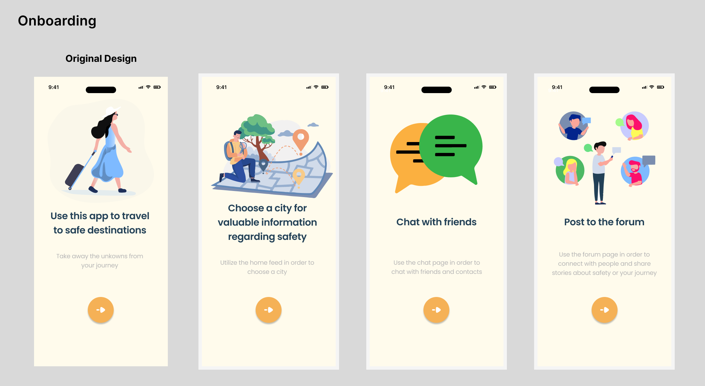
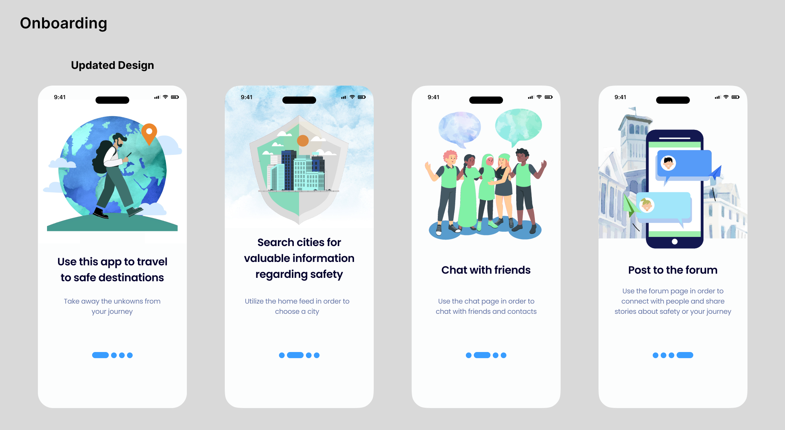

Safe Scout Mobile Application
The objective of this project was to give the existing application a visual update, with the client's desire being a bright and modern finish. Due to the substantial scope of the project, here are five of the many frames I worked on.
-
CLIENT
START UP COMPANY -
MY ROLE
UX RESEARCH
UI APP DESIGN -
PROJECT DATE
SPRING-SUMMER 2023 -
TOOLS USED
FIGMA
ADOBE PHOTOSHOP
COLORS & FONTS
The company was undergoing a color rebranding initiative, and I proposed the introduction of fresh colors to their existing palette. Shades of blue serve as the primary color in use. From a physiological standpoint, the color blue promotes feelings of calmness, confidence, loyalty, security, and reliable authority. Moreover, it also conveys a connection to nature, reminiscent of the sky and the ocean. This choice of color well aligns with the safety-focused travel application goals of the company. In addition in order to achieve a harmonious balance with the playfulness of Poppins, Source Sans Pro was employed for headers and smaller text.
DESIGN UPDATE
I conducted a thorough analysis of user feedback and research to identify areas for improvement and potential new features. Subsequently, I refined existing components like buttons, icons, and layouts to enhance usability and ensure consistent performance throughout the application.
UI Design - Original
UI Design - Updated
SIGN IN PAGE
When approaching this project, the sign-in page immediately caught attention. In the previous design users were presented with two choices, each having to be clicked to open the corresponding pages making it redundant for users. Additionally the logo seemed to lack sufficient visual hierarchy due to the background image.
Sign In Page
HOME PAGE
Presented here is the homepage, offering users the opportunity to "choose a destination" and explore areas around the world, including safety information and other users' experiences. The page includes navigation options for continents, quick browsing, and a forum. By implementing the new color palette and visual hierarchy, the page transformed into a more engaging and captivating experience.
Home Page
FORUM
This application features a forum for users to post and discuss safe areas and travel topics. In the original design the search bar shows the current page city and gives the option to search the entire forum. Below is the page navigation and quick selections. To scroll the forum disappears behind the quick selection buttons. Option for writing a post is indicated by the green plus icon.
Forum
SAFETY MAP
The map is one of the main components of the application. The extra steps in redesigning was discussing with developers of possibilities. The function of this map is to click on the safety rating squares that will lead you to a rating page consisting of basic freedoms, night, theft, and physical safety. In the origina design the user does not have the option to filter those categories on the map screen. The header tells you were you generally are and on the right hand side is the safety meter and toggle options for the embassy, police, and friends.
Safety Map
ONBOARDING
After discussing various ideas for image replacement, we ultimately decided on using blue and green watercolor with flat illustrations. These animated illustrations serve as uplifting elements that captivate attention and effectively communicate the intended message to users. A pagination replaces the button icon to indicate mobile swiping, and lessen navigational pain points.
UI Design - Original
UI Design - Updated
In these short prototypes you can see the impact of incorporating the updated onboarding components.
CLOSING
The process of updating the Safe Scout app UI has been both challenging and rewarding. The outstanding transition of the application was a result of not just me, but the collaboration of the development team and the invaluable input from everyone involved. With the app's new look, I am completely confident in the capacity to offer travelers a sense of security and connection during their adventures.